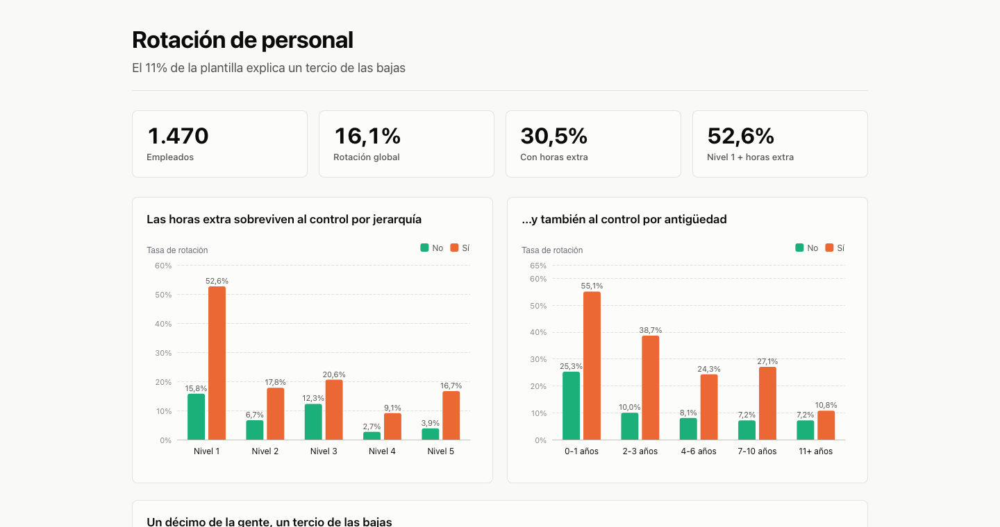

A tenth of the people.
A third of the departures.
Fourteen hundred and seventy employees, thirty-four variables — and one group of
156 people you can name, schedule and fix on Monday.

That button opens a single HTML file. No login, no plugin, no account — and it works with the wifi off. It is the same file a client receives.
Executive summary
156 people — 10.6% of the workforce — account for 34.6% of every departure. They are the employees at the lowest job level who also work overtime, and they leave at 52.6% against 15.8% for their peers at the same level who do not.
That sentence is the whole deliverable. Everything below is the work that makes it safe to act on.
Why overtime, and not the twelve other things that correlate
An attrition dataset hands you thirty-four columns and most of them correlate with leaving. The job is not finding a correlation — it is finding the one that survives a control.
Overtime does. Employees working overtime leave at 30.5% against 10.4%, and the gap holds inside every one of the five job levels and inside every one of the five tenure bands. It is not seniority wearing a disguise, and it is not new hires churning.
| Job level | No overtime | Overtime |
|---|---|---|
| Level 1 | 15.8% | 52.6% |
| Level 2 | 6.7% | 17.8% |
| Level 3 | 12.3% | 20.6% |
| Level 4 | 2.7% | 9.1% |
| Level 5 | 3.9% | 16.7% |
What I threw away, and why that matters more
Work–life balance looked like a strong driver: the worst-rated group leaves at 31.2%. Controlling for overtime, it contributes about four points. It is a consequence, not a cause — people rate their balance badly because they are working overtime.
Tenure, age, years in role and years with the current manager all ranked high. They are the same latent variable — seniority — counted four times. Monthly income and job level correlate at ρ = 0.92, which means a salary finding is mostly a hierarchy finding wearing a different label.
This is where most attrition reports go wrong. They hand over a ranked list of correlations, the client acts on the top one, and nothing moves — because the top one was a symptom.
The salary question, answered honestly
Inside level 1, pay does retain: the bottom salary quintile leaves at 34.9% and the top at 18.5%. Across the company as a whole, comparing people at the same level, the effect collapses to roughly six points.
So: raise the floor at level 1, not the whole scale. That is a materially cheaper recommendation than the one a correlation ranking would have produced.
What to do on Monday
- Redistribute load for the 156 level-1 employees working overtime. Best ratio between size of problem and cost of fixing it.
- Review the level-1 salary floor — not the full scale.
- Re-measure at 90 days on that same group.
What this does not say
- The dataset is synthetic. IBM published it for teaching. The method is real and transferable; the figures describe no existing company.
- It is a photograph, not a film. There are no hire or exit dates, so nothing here says whether attrition is getting better or worse.
How it was built
SQL for the quality audit and the aggregations, Python for the confounding analysis (Spearman ρ and Cramér's V to catch latent variables), and a hand-built front end — a single self-contained HTML file with no external dependencies.
The colour palette is validated with a script rather than chosen by eye: every adjacent pair clears a ΔE of 8 in OKLab under the three common forms of colour blindness. About 8% of men cannot distinguish the red/green pairs most dashboards ship with. This one does not have that problem, and it is checked on every build rather than hoped for.